Deep Learning
with
Created by Daniel Mané / danmane@
Deep Learning
Deep Neural Networks
What Are Neural Networks?
A tour thanks to Chris Olah
Materials at http://colah.github.io/
A "Typical Neuron"
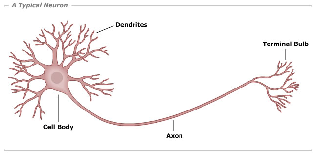A Mathematical Neuron
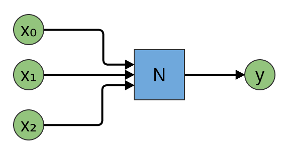 Figures from Chris OlahA Mathematical Neuron
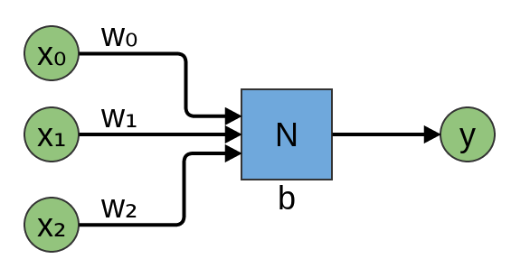 Figures from Chris OlahBinary Threshold Neurons
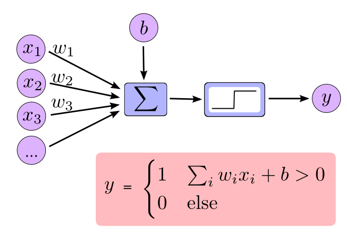
Figures from Chris OlahNAND neuron
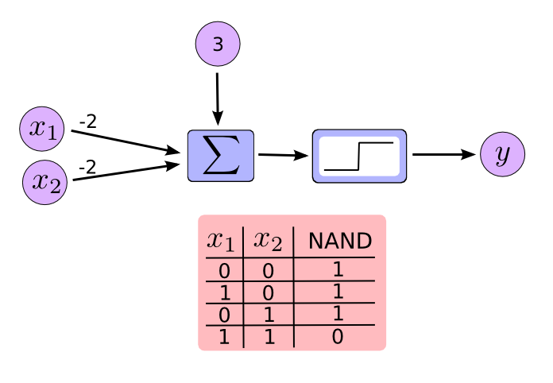Neurons are Universal
Figures from Chris Olah..but how do we train them?
with calculus! 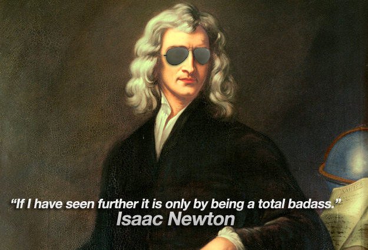
problem: this is not differentiable
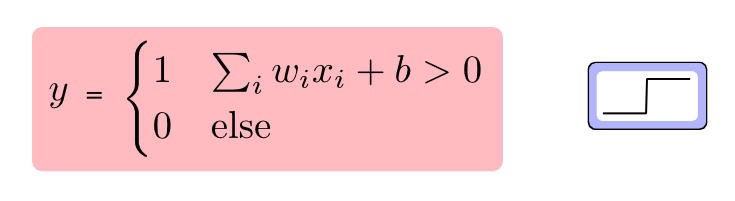 Figures from Chris OlahSigmoid
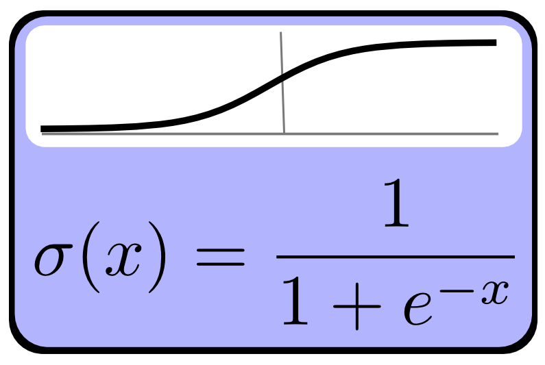 Figures from Chris OlahSigmoid Neurons
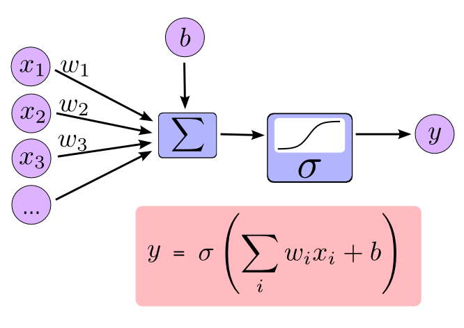
Figures from Chris OlahLayers
A Sigmoid Layer
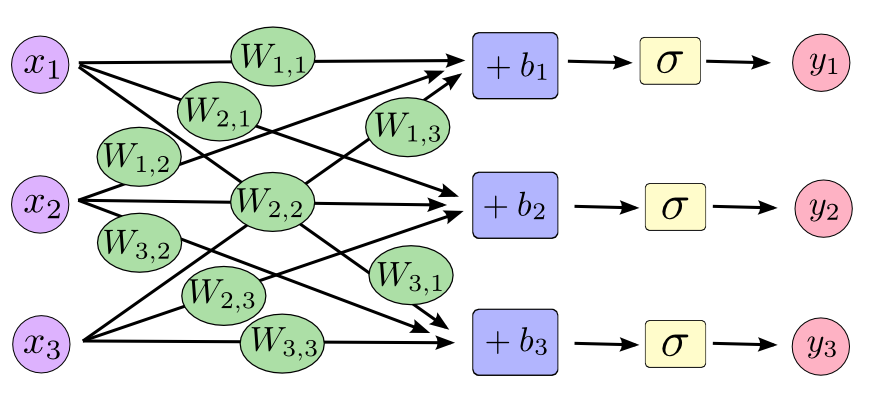 Figures from Chris OlahA Sigmoid Layer
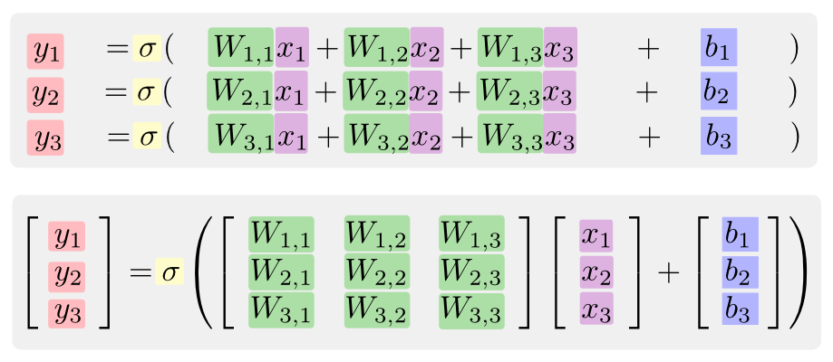
Figures from Chris OlahGeometric Perspective
Neural Nets as Geometric Transformations
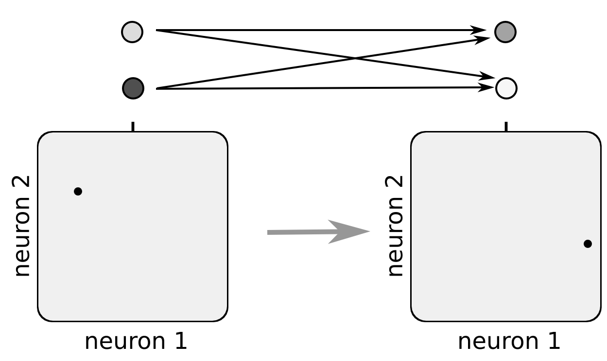 Figures from Chris OlahOne Layer

A Simple Example
Problem
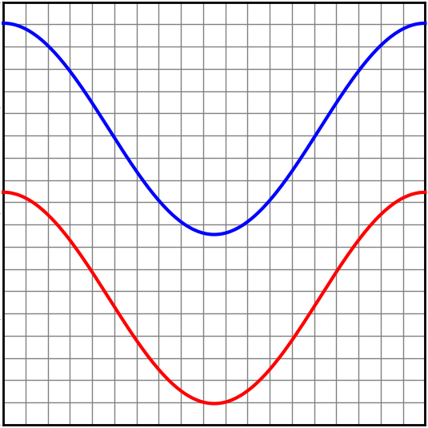Low-dimensional subspace
Figures from Chris OlahLinear Model
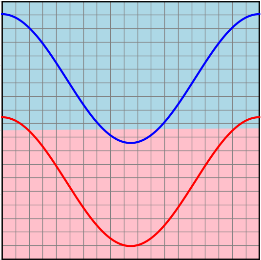 Figures from Chris OlahNeural Net
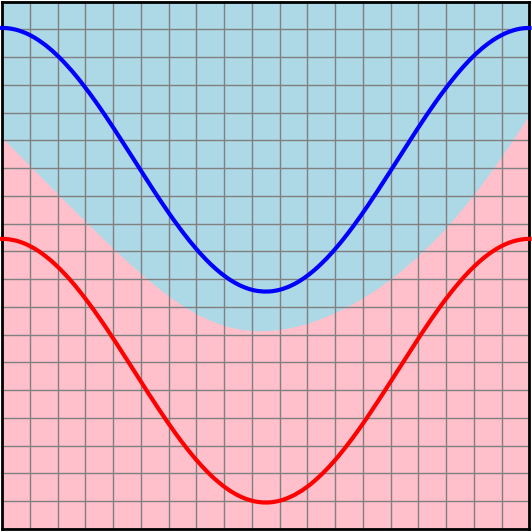 Figures from Chris OlahNeural Net, Hidden Representation
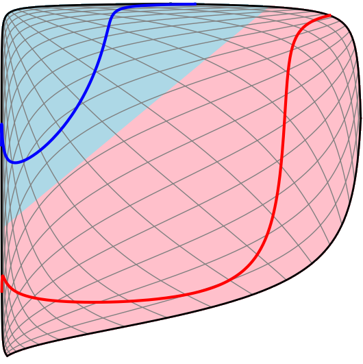 Figures from Chris OlahNeural Net, Bending Data
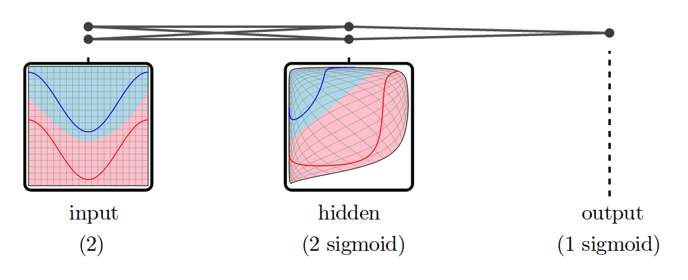 Figures from Chris OlahThe Spiral Problem
Separating a Spiral
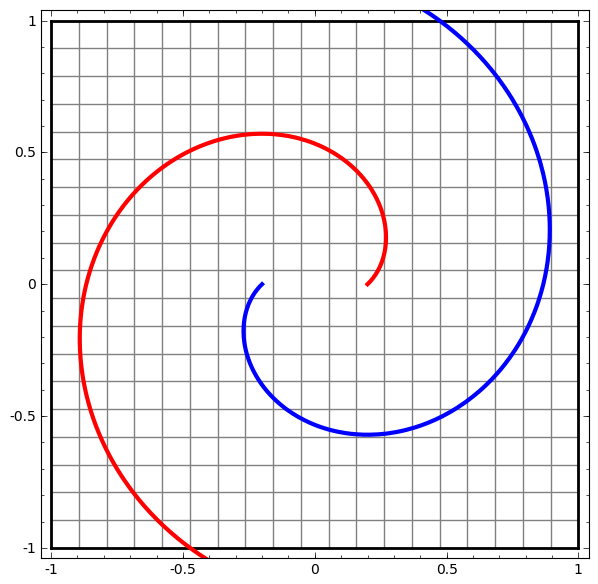 Figures from Chris OlahTime to go to the playground!
 (Created by Daniel Smilkov and Shan Carter)
(Created by Daniel Smilkov and Shan Carter)
Neural Nets: There's lots going on!
Convolutional Nets
 Figures from Chris Olah
Figures from Chris Olah
Recurrent Nets
 Figures from Chris Olah
Figures from Chris Olah
LSTMs
"Long Short Term Memory"
 Figures from Chris Olah
Figures from Chris Olah
Google Brain

Jeff Dean Facts
The speed of light used to be 140 miles per hour. Then Jeff spent a weekend optimizing it.
Compilers don't warn Jeff Dean. Jeff Dean warns compilers.
Jeff Dean puts on his pants one leg at a time. But, if he had more than two legs, you would see that his approach is actually O(log n).
On to the other slidedeck!

Seems complicated!
Why not just have layers and call it a day!
Need flexibility to do this
And newer / cooler things, like Neural Turing Machines
- Distributed
- Automatic differentiation
- Portable
- Super flexible
- Open-source
But, it's complicated!
We need visualizations!

Q&A
- Chris Olah's Blog: colah.github.io
- TensorFlow website: TensorFlow.org
- Me: danmane@(google|gmail).com